Guia
Como usar o Nosso
Do zero ao primeiro acerto de contas — e depois cada função do plano Pro em ação — com prints reais do app, tela por tela. Sem conectar banco, sem os dois criarem conta.
1Criar o espaço do casal
Na primeira vez que abre o app, escolha como você (e seu par) querem aparecer — é opcional, dá pra mudar depois em Ajustes. Toque em Criar espaço do casal: o app gera um código de 6 letras.
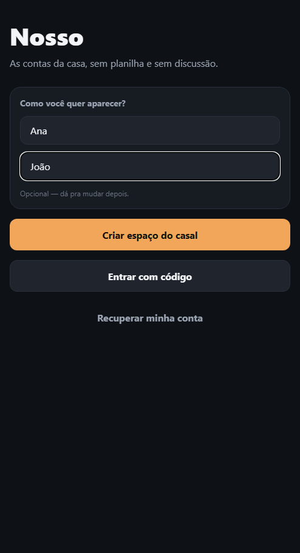
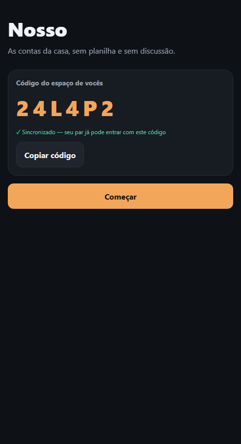
Manda esse código pro seu par — no aparelho dele, é só tocar em Entrar com código na mesma tela inicial. Nenhum dos dois cria conta com e-mail e senha.
2Proteger seus dados
Sem um e-mail de recuperação, os dados do espaço ficam só nos dois aparelhos — dá pra pular esse passo e configurar depois em Ajustes → Recuperação.
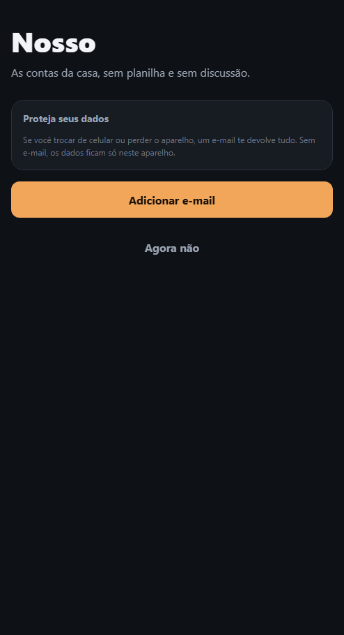
3A tela inicial
O painel do mês: total gasto, quem deve a quem (recalculado a cada lançamento) e os últimos gastos. O + no canto lança um gasto novo.
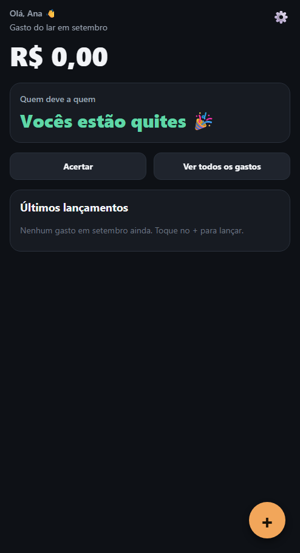
4Lançar um gasto
Valor, categoria (12 fixas — categorias personalizadas são Pro) e quem pagou. Role pra escolher de quem é o gasto — meu / seu / nosso, com divisão exata se quiser — e o tipo: à vista é grátis e sem limite; todo mês (conta fixa) e parcelado já existem no app, atrás do cadeado do plano Pro.
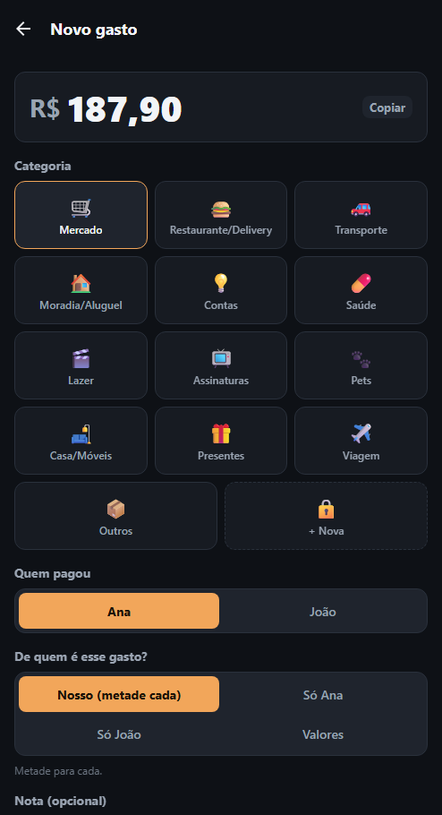
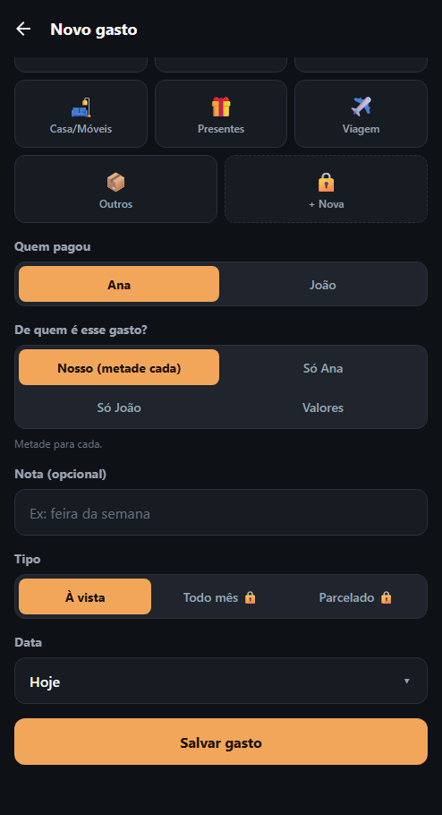
5Quem deve a quem, sempre em dia
Cada gasto salvo atualiza o total e o saldo entre os dois na hora — nos dois aparelhos, ao vivo.
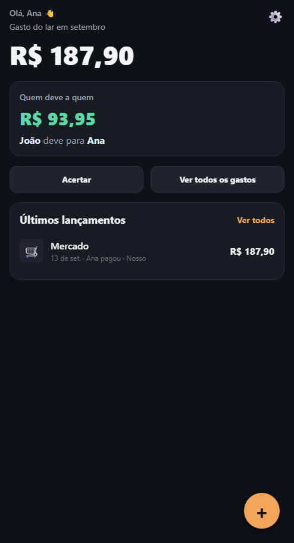
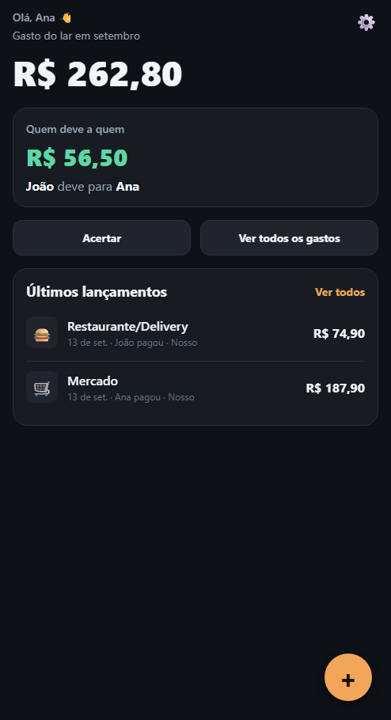
6Acertar as contas
Toque em Acertar. O valor sugerido é o saldo total — dá pra editar pra registrar um acerto parcial.
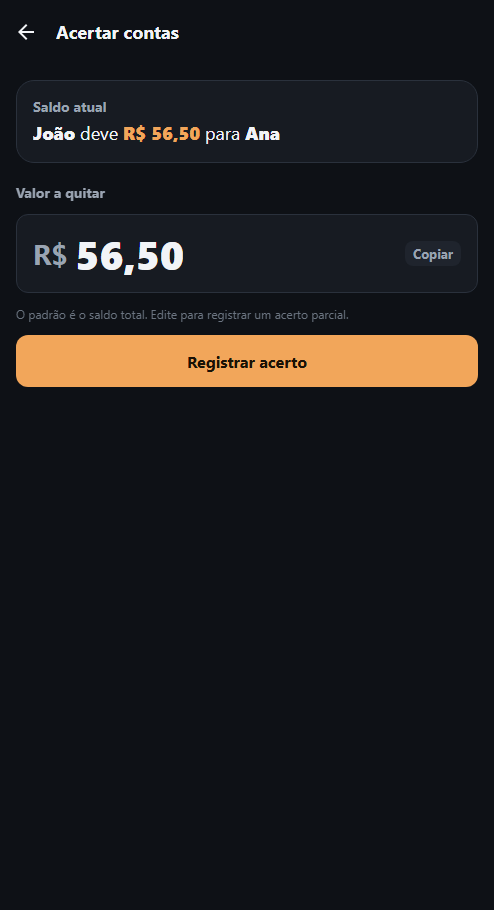
7Ver o histórico
A lista completa do mês, com filtro por pessoa e por categoria, e navegação entre meses.
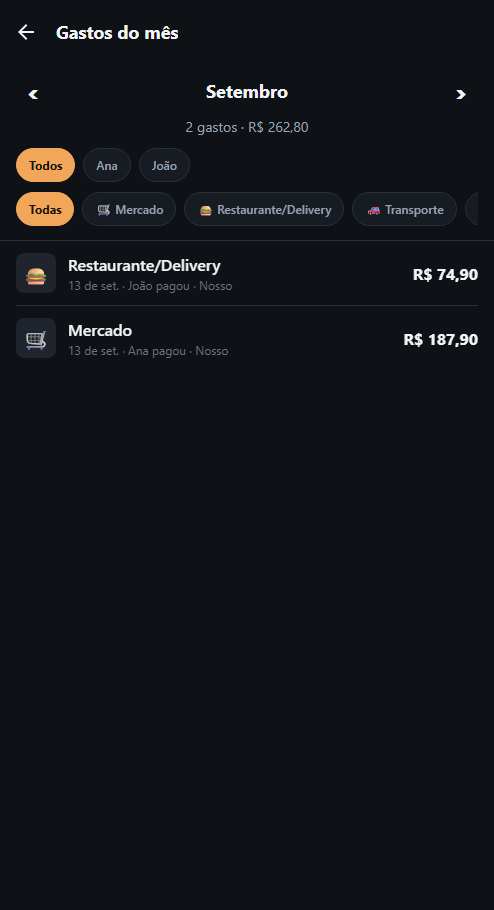
8Ajustes e seus dados
Idioma, tema, status da sincronização com seu par e o e-mail de recuperação. Mais pra baixo: contas fixas, categorias, resumo semanal, e a seção Dados.

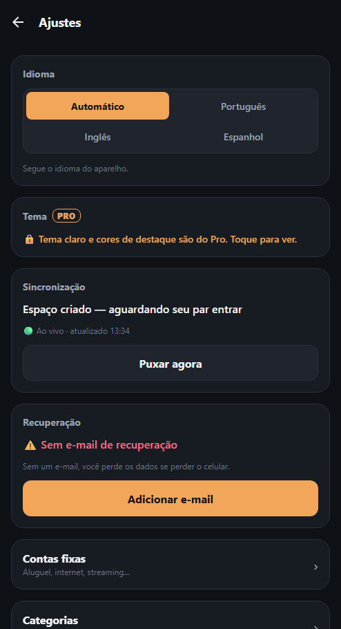
9Nosso Pro
Contas fixas, compras parceladas, histórico completo, projeção dos próximos meses, categorias e resumo personalizados, relatório em PDF e temas. O que você já criou continua funcionando normalmente — o cadeado só vale pra criar coisa nova.
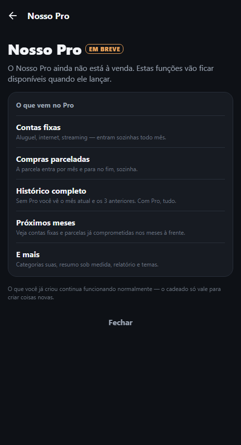
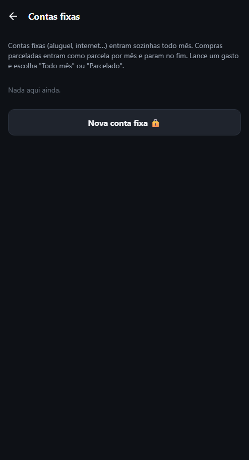
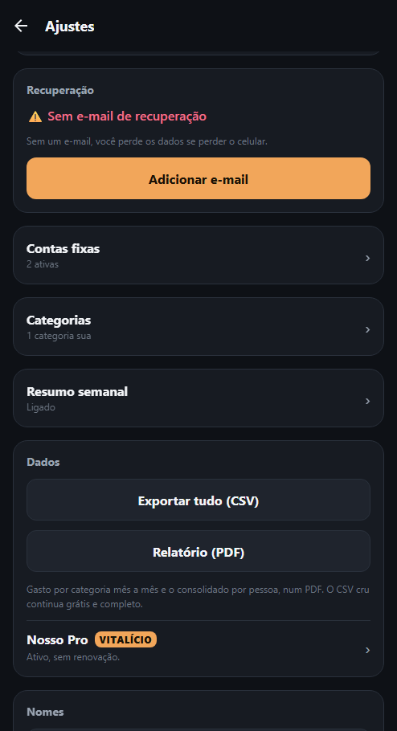
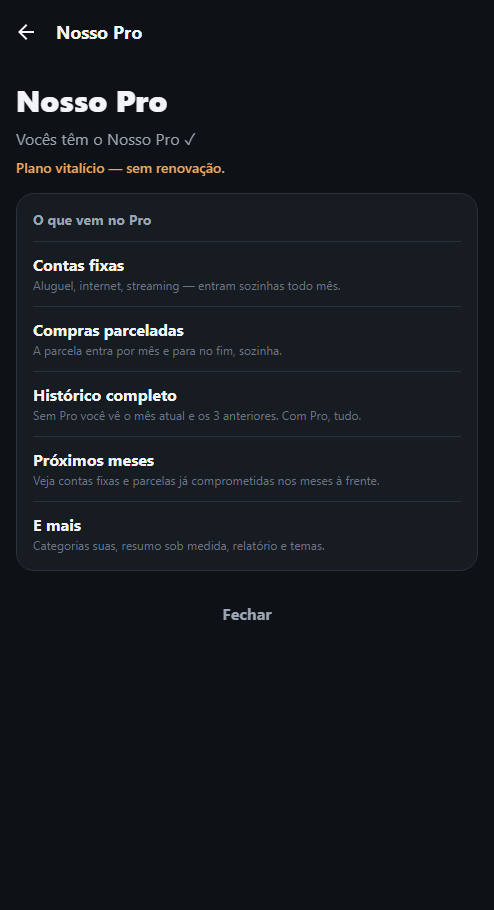
10Contas fixas e compras parceladas, na prática
No formulário de Novo gasto, os tipos "Todo mês" e "Parcelado" perdem o cadeado. Depois de cadastrar um aluguel e um sofá em 12x, a tela Contas fixas mostra os dois, com o progresso da parcela.
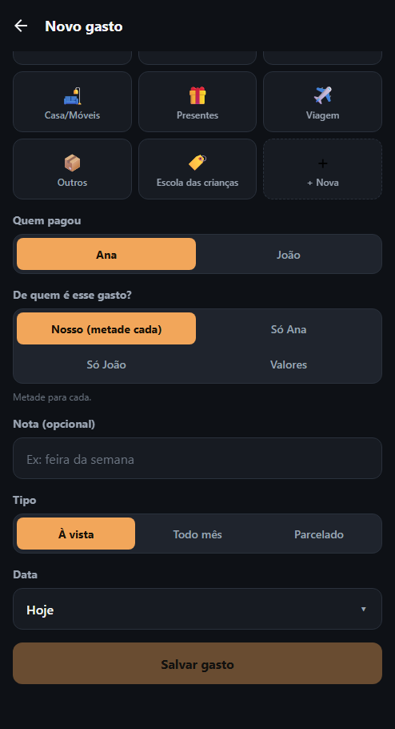
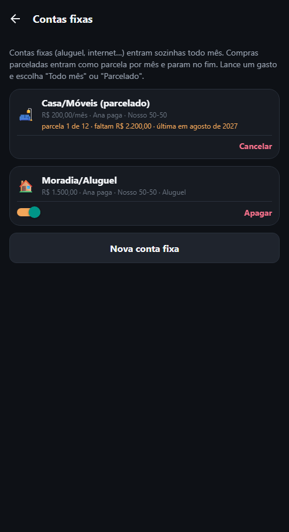
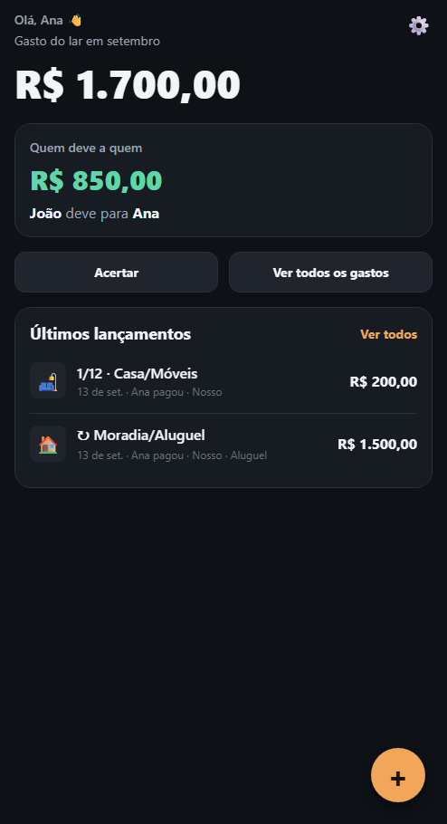
11Categorias personalizadas
Além das 12 categorias fixas, o Pro deixa o casal criar as próprias — sincronizam entre os dois aparelhos e aparecem lado a lado com as fixas.
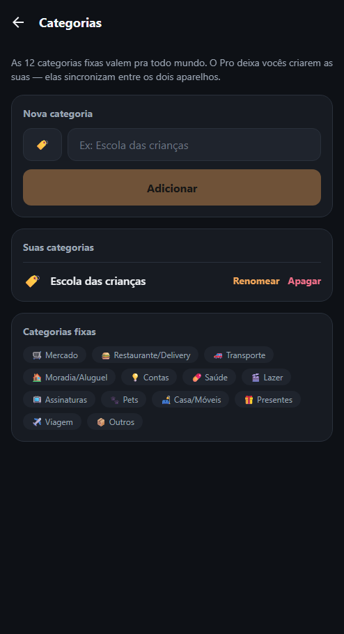
12Histórico completo e projeção
Sem Pro, dá pra ver só o mês atual e os últimos meses. Com Pro, dá pra voltar até o início — e ir pra frente também, vendo o que já está comprometido em contas fixas e parcelas.
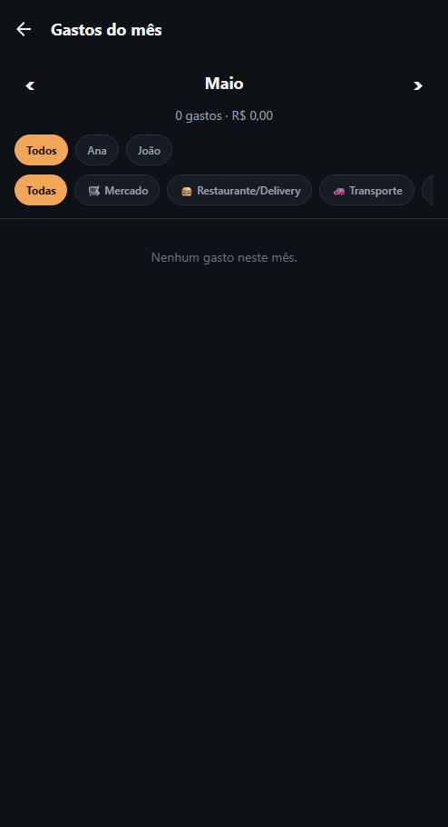
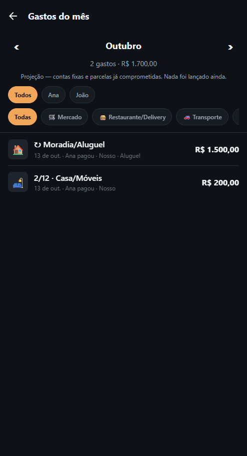
13Resumo semanal personalizado
O resumo básico (dia, horário, gasto e saldo) é grátis. O Pro acrescenta a categoria que mais pesou, comparação com a semana anterior em %, e uma meta de gasto do lar — com prévia ao vivo do texto da notificação.
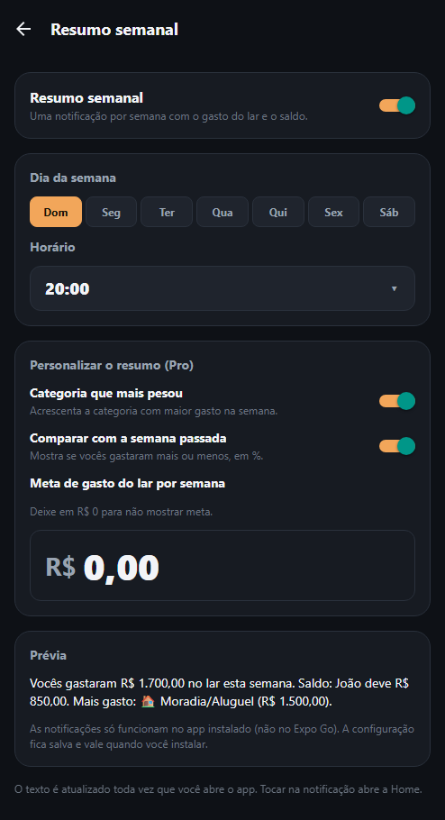
14Temas
Tema claro (além do escuro padrão) e cor de destaque — âmbar, azul ou roxo — também são Pro.
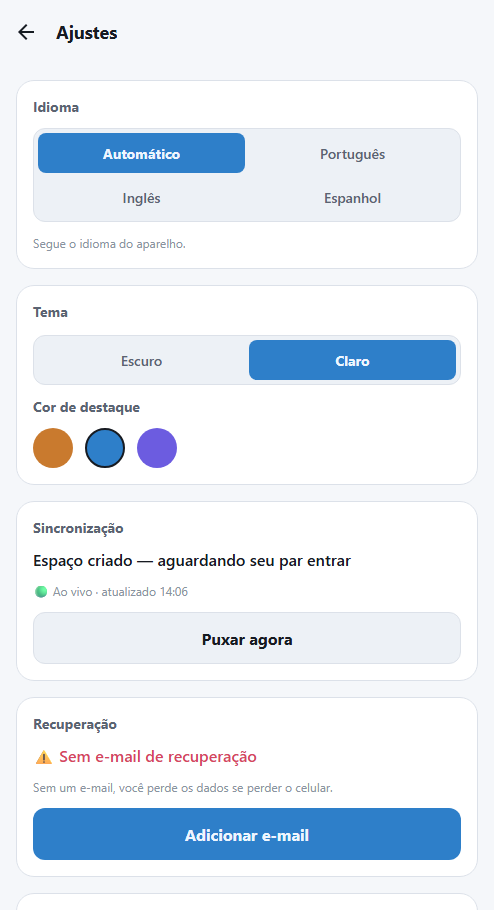
Experimente o Nosso
Grátis. Dois minutos pra configurar. Nenhum banco, nenhum cartão.
iPhone (TestFlight) Android (beta)No Android, o formulário só entra você na lista de espera — o link de instalação chega depois por e-mail.